Vórtices y
cañones de vórtices

¿Qué son los vórtices?
Los vórtices son fenómenos que se encuentran presentes a nuestro alrededor y permiten explicar diversos sucesos del mundo exterior: huracanes, remolinos, anticiclones, ciclones, tornados e incluso el sistema solar. Si nos centramos específicamente en los anillos de vórtices, podremos notar que estos se encuentran presentes en eventos tan cotidianos como el volar de una semilla de diente de león, los helicópteros, e incluso, el latir del corazón.
Matemáticamente los cañones de vórtice presentan similitudes con los campos magnéticos, por lo tanto, una aproximación que permite conocer la velocidad de las líneas de vórtices se obtiene mediante una reformulación de la ley de Ampere. Realizando una integral de línea alrededor de una recta infinitamente larga que representa la línea de vórtice, obteniéndose la siguiente expresión matemática: \[ v = \frac{\kappa}{2\pi r} \]
Sin embargo, a diferencia del magnetismo, los campos de velocidades creados por el vórtice pueden afectar el comportamiento de este, generando así turbulencias.
Finalmente, para poder calcular la velocidad del anillo de humo generado por el cañón de vórtices se utiliza la siguiente aproximación. Se consideran dos líneas de vórtices paralelas separadas a una distancia \(d\) con sentido contrario. Cada campo de velocidad actúa sobre la línea de vórtice contraria, generando que ambas líneas se muevan en conjunto en la misma dirección con una velocidad: \[ v = \frac{\kappa}{d\pi } \]
Más información
El estudio de la vorticidad no es tan reciente. En 1858 fue descrita la naturaleza de las líneas de vórtices por el físico alemán Hermann von Helmholtz.
Cañones de vórtices
Para demostrar el comportamiento de un anillo de vórtice se utilizan los cañones de vórtices, debido a la simpleza de su construcción y funcionamiento y el bajo costo de fabricarlo.
A continuación, te encontrarás con la simulación de un cañón de vórtices el cual te permitirá generar y visualizar distintos vórtices.
Simula tu propio cañón de vórtices
Instrucciones de uso
Para utilizar el cañón de vórtices deberás utilizar las barras deslizantes para así ajustar los parámetros inicial del vórtice que se generará a partir del cañón. Estos parámetros consisten en:
- Radio del vórtice \((r)\)
- Circulación del vórtice \((\kappa)\)
A partir de estos parámetros, se calculará uno nuevo, la velocidad \((v)\), la cual se obtiene a partir de la siguiente fórmula: \[ v = \frac{\kappa}{2\pi r} \]
Una vez definidos los parámetros, solo debes apretar “Iniciar simulación” para empezar la simulación y “Parar simulación” para detenerla.